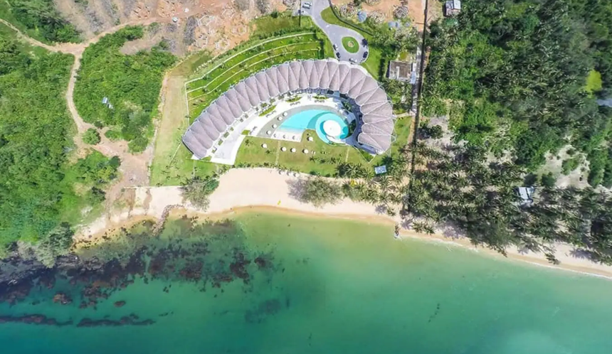
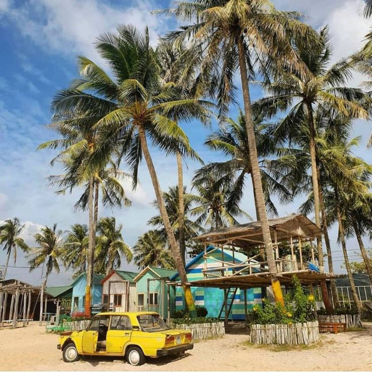
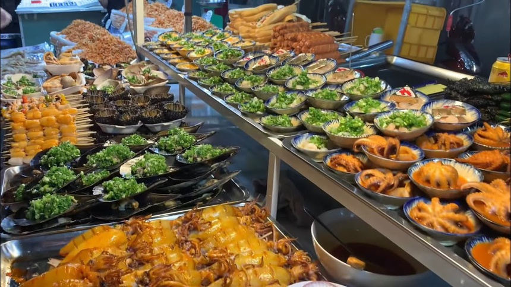

Trải nghiệm du lịch Phú Quốc khi mở cửa trở lại
Sau khi kết thúc giãn cách xã hội, ngành du lịch dần mở cửa trở lại, cả du khách trong và ngoài nước mong chờ đặt chân đến Phú Quốc để khám phá nhiều trải nghiệm thú vị.
Không chỉ có khí hậu thuận lợi và cảnh quan độc đáo, Phú Quốc còn hội tụ nhiều trải nghiệm du lịch đặc sắc. Dưới đây là những điểm nhấn tại đảo ngọc khiến du khách vui chơi “quên lối về”.
Nhiều góc check in độc đáo
Có nhiều bãi tắm đẹp hàng đầu Đông Nam Á với màu nước biển xanh ngọc bích đặc trưng, Phú Quốc quy tụ chuỗi resort sang chảnh, đẳng cấp quốc tế. Tại đây có nhiều resort sở hữu phong cách kiến trúc mới lạ cùng hàng trăm điểm check-in sống ảo độc đáo.
Tùy sở thích, du khách có thể lựa chọn những resort mang kiến trúc đương đại kết hợp văn hóa bản địa đậm phong cách Á Đông, hay những khu nghỉ dưỡng được thiết kế với phong cách trang nhã, ấm cúng - lựa chọn sáng giá cho những ai yêu thiên nhiên.
Bên cạnh những địa điểm check-in quen thuộc như chợ đêm, cáp treo, bảo tàng…, Phú Quốc còn nhiều nơi nguyên sơ để khám phá gồm: Vườn quốc gia Phú Quốc dành cho dân phượt, thác và suối Tranh có thể lưu lại cắm trại, hòn Đồi Mồi hoang sơ kỳ bí, hay hòn Một mang nét riêng độc đáo với những túp lều nhỏ ven biển…
Thiên đường ẩm thực và lễ hội
Ăn ngon, giá hợp lý, Phú Quốc được xem là thiên đường cho các food blogger. Nói đến ẩm thực Phú Quốc, nhiều người sẽ nghĩ tới những món hải sản tươi ngon như: Gỏi cá trích, rau rừng chấm nước mắm truyền thống, ghẹ Hàm Ninh thịt chắc thơm hay mực chớp chấm muối hồng tiêu cay nồng...
Tại đảo ngọc, du khách thập phương có thể trải nghiệm từ những món ăn dân dã vùng biển đến hải sản chế biến theo tiêu chuẩn bếp 5 sao. Dù là bàn ăn sang trọng hay quán cóc bình dân, ẩm thực Phú Quốc đều có thể tạo nên những trải nghiệm vị giác khó quên.
Với hệ thống resort, khách sạn cao cấp, Phú Quốc ngày càng trẻ hoá trong phong cách phát triển và quảng bá du lịch. Nơi đây quy tụ nhiều show diễn hoành tráng, những bữa tiệc âm nhạc đỉnh cao thu hút giới trẻ.
Bên cạnh đó, các chương trình giải trí - thể thao đặc sắc như lễ hội đua thuyền, carnaval sôi động… cũng khiến du khách có những trải nghiệm đầy năng lượng trên đảo ngọc.
Thí điểm đón khách quốc tế tháng 11
Trước những thay đổi trong giai đoạn bình thường mới, Phú Quốc đã sẵn sàng mở cửa trở lại để chào đón du khách trong nước và quốc tế. Phú Quốc đã triển khai tiêm vaccine cho 90% dân số độ tuổi trên 18. Trong đó, trên 35% tỷ lệ dân số đã hoàn thành tiêm 2 mũi, con số này dự kiến đạt 90% trong vài tuần tới.
Ngoài ra, Phú Quốc đã xây dựng các phương án tổng thể cho việc mở cửa du lịch, hoàn thiện hạ tầng y tế với hệ thống khách sạn cách ly tập trung, Trung tâm y tế TP Phú Quốc và một số bệnh viện sẵn sàng tổ chức xét nghiệm cho hơn 200 khách du lịch/ngày.
Nhiều hãng hàng không cũng đang “rục rịch” lên kế hoạch khai thác lại đường bay kết nối các tỉnh, thành phố toàn quốc với đảo ngọc. Trong đó, Vietjet tung ra nhiều chương trình khuyến mãi hấp dẫn nhằm kích cầu du lịch, vừa đảm bảo an toàn cho du khách, vừa giúp Phú Quốc phục hồi kinh tế sau khi dịch bệnh được kiểm soát.
Theo kế hoạch dự kiến, chương trình mở cửa đón khách quốc tế tại Phú Quốc được triển khai thực hiện trong 6 tháng. Từ ngày 20/11, Phú Quốc tổ chức đón 1-3 chuyến bay đầu tiên vận hành thử nghiệm quy trình đón, phục vụ khách để đánh giá, rút kinh nghiệm.
Từ ngày 20/12, Phú Quốc triển khai mở cửa du lịch gồm hai giai đoạn. Giai đoạn một (từ 20/12/2021 đến 20/3/2022) sẽ thí điểm đón 3.000-5.000 khách/tháng, địa điểm hạn chế.
Sau khi đánh giá kết quả giai đoạn một, nếu đảm bảo yêu cầu, giai đoạn hai (từ 20/3/2022 đến 20/6/2022) sẽ được triển khai thí điểm và mở rộng quy mô dự kiến đón 5.000-10.000 khách/tháng.
© 2021 Mollyclo. All Rights Reserved.
VỀ MOLLYCLO
- Về chúng tôi
- Mollyclo Blog
- Hợp tác cùng chúng tôi
- Cơ hội nghề nghiệp
ĐỐI TÁC
- Đối tác đăng nhập
- Đối tác liên kết
- Chương trình cho người nổi tiếng
- Chương trình cho Đại lý
ĐIỀU KHOẢN SỬ DỤNG
- Điều khoản sử dụng
- Quyền riêng tư
- Chính sách Cookie
- Thưởng phát hiện lỗi phần mềm
- Chính sách và quy định
KÊNH THANH TOÁN